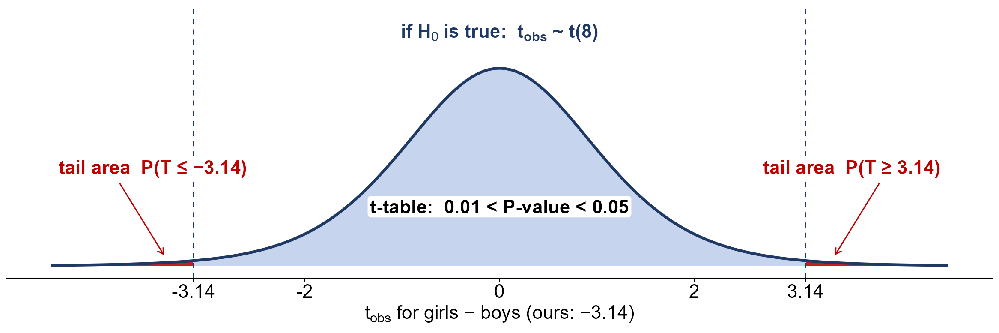
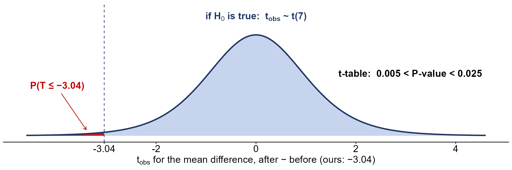
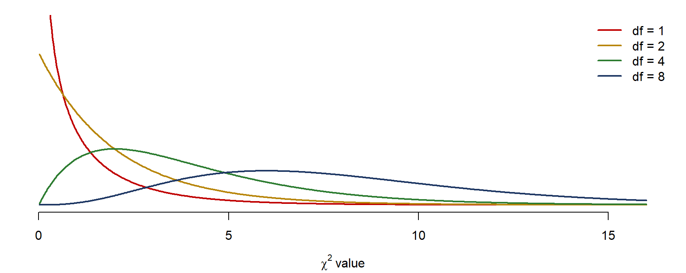

Week 12 Notes
STAT 251 Section 01
Lecture 28
Lecture 28 has three parts. It starts with a review of the two-proportion test from Lecture 27, focusing on one question that trips people up: when do we pool? Then it extends the two-sample idea from proportions to means, first for two independent samples and then for matched pairs. The textbook sections are OpenStax 10.1 and OpenStax 10.4. In class, Lecture 28 ended with the advantages and disadvantages of pooling. The rank-sum test and matched pairs moved to Lecture 29.
Review: when do we pool?
Every test and interval for two proportions uses the same estimate, \(\hat{p}_1 - \hat{p}_2\), and an SE of the form \[SE(\hat{p}_1 - \hat{p}_2) = \sqrt{\frac{p_1(1-p_1)}{n_1} + \frac{p_2(1-p_2)}{n_2}}\] We never know \(p_1\) and \(p_2\), so we have to put something in their place. The choice depends on what we are assuming:
| Null hypothesis or goal | The SE we use | Pool? |
|---|---|---|
| \(H_0: p_1 = p_2\) (that is, \(p_1 - p_2 = 0\)) | \(SE_0 = \sqrt{\hat{p}(1-\hat{p})\left(\frac{1}{n_1} + \frac{1}{n_2}\right)}, \quad \hat{p} = \frac{X_1 + X_2}{n_1 + n_2}\) | pooled |
| \(H_0: p_1 - p_2 = d_0\), with \(d_0 \neq 0\) | \(SE = \sqrt{\frac{\hat{p}_1(1-\hat{p}_1)}{n_1} + \frac{\hat{p}_2(1-\hat{p}_2)}{n_2}}\) | unpooled |
| a \(100(1 - \alpha)\%\) confidence interval for \(p_1 - p_2\) | \((\hat{p}_1 - \hat{p}_2) \pm Z_{1-\alpha/2} \sqrt{\frac{\hat{p}_1(1-\hat{p}_1)}{n_1} + \frac{\hat{p}_2(1-\hat{p}_2)}{n_2}}\) | unpooled |
Why the first row pools. A test works out what the data would look like if \(H_0\) were true. If \(H_0: p_1 = p_2\) is true, there is only one proportion, \(p\), and both samples estimate it. The best estimate of one \(p\) uses all the data, so we combine the samples: all the successes over all the observations, \(\hat{p} = (X_1 + X_2)/(n_1 + n_2)\). This is the same reason the one-sample test uses \(p_0\) in its SE: the SE is built from what \(H_0\) says.
Why the other two rows do not. If \(H_0\) says \(p_1 - p_2 = d_0\) with \(d_0 \neq 0\), the null itself says the two proportions are different, so there is no common \(p\) to estimate, and pooling the samples would mix two different populations. A confidence interval assumes no hypothesis at all, so again there is nothing to justify pooling. In both cases we estimate \(p_1\) by \(\hat{p}_1\) and \(p_2\) by \(\hat{p}_2\) separately.
The rule in one line: pool only when \(H_0\) says \(p_1 = p_2\).
Example: a confidence interval for the hives medications
In Lecture 27 we tested the two hives medications (OpenStax Example 10.8): 20 of 200 adults on medication A and 12 of 200 on medication B still had hives after 30 minutes. With the pooled \(SE_0\), \(z_{obs} = 1.47\) and the two-sided P-value was 0.1416, so at \(\alpha = 0.01\) we did not reject \(H_0: p_A = p_B\).
Now estimate the difference with a 99% confidence interval. This time we do not assume \(H_0\), so we do not pool:
- \(\hat{p}_A = 20/200 = 0.10\) and \(\hat{p}_B = 12/200 = 0.06\), so \(\hat{p}_A - \hat{p}_B = 0.04\).
- The unpooled SE: \[SE = \sqrt{\frac{0.10(0.90)}{200} + \frac{0.06(0.94)}{200}} = \sqrt{0.000450 + 0.000282} \approx 0.0271\] (The pooled \(SE_0\) was 0.02713; the two are close here because the sample sizes are equal and the proportions are similar.)
- For 99% confidence, \(Z_{0.995} = 2.576\), so the margin of error is \(2.576 \times 0.0271 \approx 0.0698\).
- The interval is \(0.04 \pm 0.0698\), or \((-0.0298,\ 0.1098)\).
We are 99% confident that the proportion of adults who still have hives is between 2.98 percentage points lower and 10.98 points higher on medication A than on medication B. The interval contains 0, which agrees with the test: the data are consistent with no difference.
Example: testing a difference that is not zero
In Lecture 27’s electric-vehicle practice (OpenStax Example 10.10), 135 of 1,343 younger adults and 12 of 232 older adults owned an EV, and we found that younger adults were more likely to own one. Suppose the marketing firm makes a stronger claim: younger adults’ ownership rate is more than 2 percentage points higher than older adults’. (The 2-point claim is ours, not the book’s.) Test it at \(\alpha = 0.05\).
- Assumptions. Two independent random samples. Each sample has at least 12 successes and at least 220 failures, so both are large enough.
- Hypotheses. \(p_Y\) and \(p_O\) are the proportions of all younger and all older U.S. adults who own an EV. The claim is the alternative: \(H_A: p_Y - p_O > 0.02\) (upper-tailed). The null is \(H_0: p_Y - p_O = 0.02\).
- Test statistic. \(H_0\) says the proportions differ by 0.02, so there is no common \(p\) and we do not pool. \(\hat{p}_Y = 135/1343 \approx 0.1005\) and \(\hat{p}_O = 12/232 \approx 0.0517\), a difference of 0.0488. \[SE = \sqrt{\frac{0.1005(0.8995)}{1343} + \frac{0.0517(0.9483)}{232}} \approx 0.0167, \qquad z_{obs} = \frac{0.0488 - 0.02}{0.0167} \approx 1.72\]
- P-value. \(P(Z \geq 1.72 \mid H_0 \text{ true}) = 1 - 0.9573 = 0.0427\).
- Decision. \(0.0427 < 0.05\): reject \(H_0\). The data support the stronger claim, but only just.
The only change from an ordinary two-proportion test is in step 3: the hypothesized difference, 0.02, replaces the 0 in the numerator, and the SE is unpooled.
Comparing two independent means
(OpenStax Section 10.1.) Lecture 27 compared two populations on a categorical response (a proportion). Now the response is quantitative, and we compare the populations’ means: the average time girls and boys spend playing sports, or the average final-exam score in online and face-to-face sections. As with proportions, two sample means will almost never be equal, even when the population means are. The test asks whether the difference we see is bigger than ordinary sampling variation would produce.
The data are two independent simple random samples, one from each population:
| Population | Population mean | Population SD | Sample size | Sample mean | Sample SD |
|---|---|---|---|---|---|
| 1 | \(\mu_1\) | \(\sigma_1\) | \(n_1\) | \(\bar{x}_1\) | \(s_1\) |
| 2 | \(\mu_2\) | \(\sigma_2\) | \(n_2\) | \(\bar{x}_2\) | \(s_2\) |
The parameter is the difference in population means, \(\mu_1 - \mu_2\), and its estimate is the difference in sample means, \(\bar{x}_1 - \bar{x}_2\).
The sampling distribution of \(\bar{x}_1 - \bar{x}_2\)
- Centre \(\mu_1 - \mu_2\). Each \(\bar{x}\) is centred at its own \(\mu\), so on average the difference of the estimates is the difference of the parameters.
- Spread. From the one-sample case, \(\bar{x}_1\) has variance \(\sigma_1^2/n_1\) and \(\bar{x}_2\) has variance \(\sigma_2^2/n_2\). Because the samples are independent, the variances add, just as they did for proportions: \[SE(\bar{x}_1 - \bar{x}_2) = \sqrt{\frac{\sigma_1^2}{n_1} + \frac{\sigma_2^2}{n_2}}\]
- Shape. Normal if both populations are normal. If they are not, the CLT makes it approximately normal when both samples are large (the course’s rule is both \(n \geq 30\)).
Putting these together, \(\bar{x}_1 - \bar{x}_2 \sim N\left(\mu_1 - \mu_2,\ \sqrt{\frac{\sigma_1^2}{n_1} + \frac{\sigma_2^2}{n_2}}\right)\). The picture shows why the variances add. Each sample mean wobbles around its own \(\mu\), and their difference picks up both wobbles, so it is more spread out than either mean on its own.
![Two panels. Left: two bell curves, the sampling distributions of x-bar 2 (gold, taller and narrower, centred at mu 2) and of x-bar 1 (navy, centred at mu 1 to its right), labelled two sample means, each with its own SE. Right, on the same height scale: one red bell curve for x-bar 1 minus x-bar 2, centred at mu 1 minus mu 2, lower and wider than either curve on the left, with an arrow marking one SE. A dashed line at 0 is labelled H0: mu 1 minus mu 2 equals 0. The axis label reads: the difference, wider, because variances add.](assets/l28_diff_dist.png)
Its distribution, in practice. We do not know \(\sigma_1\) and \(\sigma_2\), so the SE uses \(s_1\) and \(s_2\) instead (next section). The difference itself stays approximately normal. What changes is the standardized difference: dividing by an estimated SE adds uncertainty, and the result follows, approximately, a \(t\) distribution: \[\frac{(\bar{x}_1 - \bar{x}_2) - (\mu_1 - \mu_2)}{\sqrt{\frac{s_1^2}{n_1} + \frac{s_2^2}{n_2}}} \ \dot\sim\ t\big(\min(n_1 - 1,\ n_2 - 1)\big)\] (\(\dot\sim\) means “approximately follows”). Both the \(t\) shape and the df are approximations, as the next section explains.
The test statistic
In practice \(\sigma_1\) and \(\sigma_2\) are unknown, so, as in the one-sample \(t\)-test, we replace them with the sample standard deviations: \[SE = \sqrt{\frac{s_1^2}{n_1} + \frac{s_2^2}{n_2}}\] Under \(H_0\), \(\mu_1 - \mu_2 = 0\), so the test statistic is \[t_{obs} = \frac{(\bar{x}_1 - \bar{x}_2) - 0}{\sqrt{\frac{s_1^2}{n_1} + \frac{s_2^2}{n_2}}}\] Estimating two standard deviations adds uncertainty, so \(t_{obs}\) is compared with a \(t\) distribution, not the standard normal. Unlike the one-sample test, though, the \(t\) distribution here is an approximation. With two different SDs in the SE, \(t_{obs}\) does not follow any \(t\) distribution exactly, so both the curve and its degrees of freedom are approximate:
- The Welch df (what software uses). The best approximation, due to Welch (the textbook calls it the Aspin-Welch formula), is the df that makes a \(t\) curve match \(t_{obs}\) most closely. Writing \(v_1 = s_1^2/n_1\) and \(v_2 = s_2^2/n_2\) (each sample’s share of the squared SE), \[df = \frac{(v_1 + v_2)^2}{\dfrac{v_1^2}{n_1 - 1} + \dfrac{v_2^2}{n_2 - 1}}\] It is usually not a whole number, and it always lies between \(\min(n_1 - 1, n_2 - 1)\) and \(n_1 + n_2 - 2\). For the sports example below, \(v_1 = 0.866^2/9 = 0.0833\) and \(v_2 = 1.00^2/16 = 0.0625\), so \[df = \frac{(0.0833 + 0.0625)^2}{0.0833^2/8 + 0.0625^2/15} \approx 18.85\]
- In practice, by hand: \(df \approx \min(n_1 - 1,\ n_2 - 1)\), the smaller sample size minus one. This is a quick, rough approximation to the Welch df. It is never larger than the Welch df, so its \(t\) curve has heavier tails and our P-value comes out a little larger than software’s. That makes the hand method conservative: if it rejects \(H_0\), software will too. For the sports example it gives 8 instead of 18.85.
So, if \(H_0\) is true, \(t_{obs}\) approximately follows a \(t\) distribution, and by hand we use \(\min(n_1 - 1, n_2 - 1)\) degrees of freedom.
The hypotheses and the P-value
\[H_0: \mu_1 = \mu_2, \qquad \text{which is the same as} \qquad H_0: \mu_1 - \mu_2 = 0\]
| Alternative hypothesis | Tail | In words | P-value |
|---|---|---|---|
| \(H_A: \mu_1 - \mu_2 > 0\) | upper-tailed | population 1 has the larger mean | \(P(T \geq t_{obs} \mid H_0 \text{ true})\) |
| \(H_A: \mu_1 - \mu_2 < 0\) | lower-tailed | population 1 has the smaller mean | \(P(T \leq t_{obs} \mid H_0 \text{ true})\) |
| \(H_A: \mu_1 - \mu_2 \neq 0\) | two-sided | the means differ, in either direction | \(2 \times P(T \geq |t_{obs}| \mid H_0 \text{ true})\) |
With the \(t\)-table we usually cannot find the P-value exactly; we bracket it. Find the row for our df, find the two entries that \(|t_{obs}|\) falls between, and read their upper-tail areas from the top of the table. For a two-sided test, double both areas.
Assumptions
- Two independent random samples, one from each population (or two groups formed by random assignment). Nothing in one sample is paired with anything in the other.
- Normal populations, or large samples. If both samples have at least 30 observations, the CLT takes care of the shape. With smaller samples, both populations should be roughly normal (look for strong skew or outliers in the data).
The five steps
- Assumptions. Independent random samples; normal populations or both \(n \geq 30\).
- Hypotheses. Define \(\mu_1\) and \(\mu_2\) in words, then \(H_0: \mu_1 - \mu_2 = 0\) and the alternative.
- Test statistic. The SE, \(t_{obs}\), and \(df = \min(n_1 - 1, n_2 - 1)\).
- P-value. Bracket it with the \(t\)-table, using the tail(s) that \(H_A\) points to.
- Decision. Reject \(H_0\) if the P-value \(< \alpha\); state the conclusion in the context of the problem.
A confidence interval for \(\mu_1 - \mu_2\)
To estimate the difference rather than test it, use the same SE and df: \[(\bar{x}_1 - \bar{x}_2) \pm t_{1-\alpha/2} \times \sqrt{\frac{s_1^2}{n_1} + \frac{s_2^2}{n_2}}, \qquad df = \min(n_1 - 1, n_2 - 1)\] As always, an interval that leaves out 0 matches a two-sided test that rejects \(H_0: \mu_1 - \mu_2 = 0\).
To pool or not (means)
There is a second version of the two-sample \(t\)-test, the pooled \(t\)-test. If we are willing to assume the two populations have the same standard deviation, \(\sigma_1 = \sigma_2 = \sigma\), then both samples estimate the same \(\sigma\), and we combine them into the pooled standard deviation: \[s_p = \sqrt{\frac{(n_1 - 1)s_1^2 + (n_2 - 1)s_2^2}{n_1 + n_2 - 2}}\] The SE becomes \(s_p\sqrt{1/n_1 + 1/n_2}\), and the test statistic follows a \(t\) distribution with exactly \(n_1 + n_2 - 2\) degrees of freedom.
| Test or interval | The SE (or interval) we use | df | Pool? |
|---|---|---|---|
| \(t\)-test of \(H_0: \mu_1 = \mu_2\), assuming \(\sigma_1 = \sigma_2\) | \(SE = s_p\sqrt{\frac{1}{n_1} + \frac{1}{n_2}}\) | \(n_1 + n_2 - 2\) | pooled |
| \(t\)-test of \(H_0: \mu_1 = \mu_2\), \(\sigma_1, \sigma_2\) possibly different (our default) | \(SE = \sqrt{\frac{s_1^2}{n_1} + \frac{s_2^2}{n_2}}\) | \(\approx \min(n_1 - 1, n_2 - 1)\) by hand; Welch in software | unpooled |
| a \(100(1 - \alpha)\%\) confidence interval for \(\mu_1 - \mu_2\), assuming \(\sigma_1 = \sigma_2\) | \((\bar{x}_1 - \bar{x}_2) \pm t_{1-\alpha/2}\, s_p\sqrt{\frac{1}{n_1} + \frac{1}{n_2}}\) | \(n_1 + n_2 - 2\) | pooled |
| a \(100(1 - \alpha)\%\) confidence interval for \(\mu_1 - \mu_2\), \(\sigma_1, \sigma_2\) possibly different (our default) | \((\bar{x}_1 - \bar{x}_2) \pm t_{1-\alpha/2}\sqrt{\frac{s_1^2}{n_1} + \frac{s_2^2}{n_2}}\) | \(\approx \min(n_1 - 1, n_2 - 1)\) by hand; Welch in software | unpooled |
Notice the difference from proportions. There, the hypothesis decided whether to pool: the test of \(H_0: p_1 = p_2\) pools, and the confidence interval does not. For means, the test and the interval always make the same choice, because what decides it is an assumption about the SDs, \(\sigma_1 = \sigma_2\), not anything \(H_0\) says.
We do not pool for means. The textbook is blunt about it: right after the df formula it says “Notice that the sample variances \((s_1)^2\) and \((s_2)^2\) are not pooled. (If the question comes up, do not pool the variances.)” (OpenStax p. 513, and again in Example 10.1). The book does not give a reason. Here it is:
- The pooled test is correct only if \(\sigma_1 = \sigma_2\), and we almost never know that. Testing for equal SDs first does not really help, because that test has little power with small samples, which is exactly when it matters.
- If the SDs differ, especially when the sample sizes differ too, the pooled test’s real Type I error rate can be far from \(\alpha\): it rejects a true \(H_0\) more often (or less often) than we think.
- The unpooled (Welch) test is valid whether or not the SDs are equal, and when they are equal it loses very little. So it is the safe default, and it is what most software does unless you ask otherwise.
Compare this with proportions. There we must pool for the test of \(H_0: p_1 = p_2\), because for a proportion the SD is determined by \(p\) itself, \(\sqrt{p(1-p)}\). A null that says the proportions are equal automatically says the SDs are equal too. \(H_0: \mu_1 = \mu_2\) says nothing at all about \(\sigma_1\) and \(\sigma_2\), so it gives us no reason to pool.
Advantages and disadvantages of pooling
- When it is reasonable. The sample SDs are similar (a common rule of thumb: the larger is less than about twice the smaller), and the sample sizes are similar too. Pooling is also natural in a randomized experiment where the treatment is expected to shift the mean but not the spread.
- The advantage. If \(\sigma_1 = \sigma_2\) really holds, the pooled \(t\) statistic follows a \(t\) distribution exactly, with \(n_1 + n_2 - 2\) degrees of freedom, more than either the Welch df or our \(\min(n_1 - 1, n_2 - 1)\). More df means thinner tails, smaller P-values and more power. The worked example after the sports test below shows this.
- The disadvantage. If the SDs differ, especially when the sample sizes differ too, the pooled test’s real Type I error rate is not \(\alpha\). A simulation makes this concrete. Suppose \(H_0\) is true (both means equal), but sample 1 has \(n_1 = 10\) from a population with \(\sigma_1 = 3\) and sample 2 has \(n_2 = 40\) with \(\sigma_2 = 1\). Repeating that study 20,000 times:
set.seed(251)
rej <- replicate(20000, {
x <- rnorm(10, mean = 0, sd = 3) # small sample, large SD
y <- rnorm(40, mean = 0, sd = 1) # large sample, small SD; H0 is true
c(pooled = t.test(x, y, var.equal = TRUE)$p.value < 0.05,
welch = t.test(x, y)$p.value < 0.05)
})
rowMeans(rej) # how often each 5% test rejects a TRUE null## pooled welch
## 0.2578 0.0497The “5%” pooled test rejects the true null about 26% of the time: more than five times as many false alarms as promised. Welch’s test stays at about 5%. (Swap which sample has the larger SD and the pooled test goes the other way, almost never rejecting, which costs power.) * Our rule. We default to the unpooled test. When pooling is justified, it gains a little power; when it is not, it can badly mislead, and we rarely know which case we are in.
The textbook does use \(s_p\) in one place, in Cohen’s \(d\), a measure of effect size (p. 518), but never for the test.
Example: girls, boys and sports
From OpenStax Introductory Statistics 2e, Section 10.1, Example 10.1:
The average amount of time boys and girls aged seven to 11 spend playing sports each day is believed to be the same. A study is done and data are collected, resulting in the data in the table below. Each population has a normal distribution.
Sample size Average number of hours playing sports per day Sample standard deviation Girls 9 2 0.866 Boys 16 3.2 1.00 Is there a difference in the mean amount of time boys and girls aged seven to 11 play sports each day? Test at the 5% level of significance.
- Assumptions. Two independent random samples. The samples are small (9 and 16), but both populations are normal, so the \(t\)-test works.
- Hypotheses. Let \(\mu_g\) and \(\mu_b\) be the mean daily hours of sports for all girls and all boys aged 7 to 11. “Believed to be the same” is the null, and the question has no direction, so \[H_0: \mu_g - \mu_b = 0 \qquad H_A: \mu_g - \mu_b \neq 0 \quad \text{(two-sided)}\]
- Test statistic. \[SE = \sqrt{\frac{0.866^2}{9} + \frac{1.00^2}{16}} = \sqrt{0.0833 + 0.0625} \approx 0.3819, \qquad t_{obs} = \frac{2 - 3.2}{0.3819} \approx -3.14\] with \(df = \min(9 - 1, 16 - 1) = 8\).
- P-value. In row 8 of the \(t\)-table, \(2.306 < 3.14 < 3.355\). Those entries have upper-tail areas 0.025 and 0.005, so \(0.005 < P(T \leq -3.14) < 0.025\). Doubling for two sides, \[0.01 < \text{P-value} < 0.05\] Software, with df = 8, gives 0.0138.
- Decision. The P-value is below \(\alpha = 0.05\): reject \(H_0\). The data give convincing evidence that girls and boys aged 7 to 11 differ in the mean time they spend playing sports each day; the sample suggests boys play more.

Why the book’s P-value is smaller. The book reports a P-value of 0.0054. It uses the Welch df, about 18.85, and our hand method uses df = 8. The \(t\) curve with 8 df has heavier tails, so our P-value is larger. The conclusion is the same. This is the conservative trade-off: when the hand method rejects \(H_0\), so does software.
Example: math classes at two colleges
From OpenStax Introductory Statistics 2e, Section 10.1, Example 10.2:
A study is done by a community group in two neighboring colleges to determine which one graduates students with more math classes. College A samples 11 graduates. Their average is four math classes with a standard deviation of 1.5 math classes. College B samples nine graduates. Their average is 3.5 math classes with a standard deviation of one math class. The community group believes that a student who graduates from college A has taken more math classes, on the average. Both populations have a normal distribution. Test at a 1% significance level.
- Assumptions. Two independent random samples of graduates; both populations are normal, so the small samples are fine. The SDs are unknown, so it is a \(t\)-test of two means.
- Hypotheses. \(\mu_A\) and \(\mu_B\) are the mean number of math classes taken by all graduates of colleges A and B. The group’s belief is the alternative: \[H_0: \mu_A - \mu_B = 0 \qquad H_A: \mu_A - \mu_B > 0 \quad \text{(upper-tailed)}\] (The book writes the null as \(H_0: \mu_A \leq \mu_B\), a composite null; as in Lecture 25, we test it at the boundary, \(\mu_A - \mu_B = 0\).)
- Test statistic. \[SE = \sqrt{\frac{1.5^2}{11} + \frac{1^2}{9}} = \sqrt{0.2045 + 0.1111} \approx 0.5618, \qquad t_{obs} = \frac{4 - 3.5}{0.5618} \approx 0.89, \qquad df = \min(10, 8) = 8\]
- P-value. In row 8, \(0.889 < 0.89 < 1.108\), with upper-tail areas 0.20 and 0.15, so \(0.15 < \text{P-value} < 0.20\). Software, with df = 8, gives 0.1997 (the book, with the Welch df, 0.1928).
- Decision. The P-value is far above \(\alpha = 0.01\): do not reject \(H_0\). There is not enough evidence that graduates of college A take more math classes, on average, than graduates of college B.
Example: online and face-to-face final exams
From OpenStax Introductory Statistics 2e, Section 10.1, Example 10.3:
A professor at a large community college wanted to determine whether there is a difference in the means of final exam scores between students who took his statistics course online and the students who took his face-to-face statistics class. He believed that the mean of the final exam scores for the online class would be lower than that of the face-to-face class. Was the professor correct? The randomly selected 30 final exam scores from each group are listed below. Is the mean of the Final Exam scores of the online class lower than the mean of the Final Exam scores of the face-to-face class? Test at a 5% significance level.
| Class | Score 1 | Score 2 | Score 3 | Score 4 | Score 5 | Score 6 | Score 7 | Score 8 | Score 9 | Score 10 |
|---|---|---|---|---|---|---|---|---|---|---|
| Online | 67.6 | 41.2 | 85.3 | 55.9 | 82.4 | 91.2 | 73.5 | 94.1 | 64.7 | 64.7 |
| 70.6 | 38.2 | 61.8 | 88.2 | 70.6 | 58.8 | 91.2 | 73.5 | 82.4 | 35.5 | |
| 94.1 | 88.2 | 64.7 | 55.9 | 88.2 | 97.1 | 85.3 | 61.8 | 79.4 | 79.4 | |
| Face-to-face | 77.9 | 95.3 | 81.2 | 74.1 | 98.8 | 88.2 | 85.9 | 92.9 | 87.1 | 88.2 |
| 69.4 | 57.6 | 69.4 | 67.1 | 97.6 | 85.9 | 88.2 | 91.8 | 78.8 | 71.8 | |
| 98.8 | 61.2 | 92.9 | 90.6 | 97.6 | 100.0 | 95.3 | 83.5 | 92.9 | 89.4 |
- Assumptions. Two independent random samples of 30 scores each. Both \(n \geq 30\), so we do not need the populations to be normal.
- Hypotheses. \(\mu_{on}\) and \(\mu_{f}\) are the mean final-exam scores of all the professor’s online and face-to-face students. His belief is the alternative: \[H_0: \mu_{on} - \mu_f = 0 \qquad H_A: \mu_{on} - \mu_f < 0 \quad \text{(lower-tailed)}\]
- Test statistic. From the data (a calculator or R does this step): online \(\bar{x} = 72.85\), \(s = 16.92\); face-to-face \(\bar{x} = 84.98\), \(s = 11.71\). \[SE = \sqrt{\frac{16.92^2}{30} + \frac{11.71^2}{30}} \approx 3.7568, \qquad t_{obs} = \frac{72.85 - 84.98}{3.7568} \approx -3.23, \qquad df = \min(29, 29) = 29\]
- P-value. In row 29, \(3.038 < 3.23 < 3.659\), with upper-tail areas 0.0025 and 0.0005, so \(0.0005 < \text{P-value} < 0.0025\). Software, with df = 29, gives 0.0015 (the book, with the Welch df, 0.0011).
- Decision. The P-value is below 0.05: reject \(H_0\). The professor was right: the data give strong evidence that the mean final-exam score is lower for his online students than for his face-to-face students. (This is an observational comparison, so it does not show that the online format causes the lower scores; students chose their section.)
Example: the 2024 NCAA women’s basketball final
On Sunday, April 7, 2024, South Carolina and Iowa met in the NCAA women’s basketball championship. The table gives the points each team scored in its last 15 games before the final (from the 2024 STAT 251 notes).
| Game | South Carolina | Opponent | Iowa | Opponent |
|---|---|---|---|---|
| 1 | 78 | NC State | 71 | UConn |
| 2 | 70 | Oregon State | 94 | LSU |
| 3 | 79 | Indiana | 89 | Colorado |
| 4 | 88 | UNC | 64 | West Virginia |
| 5 | 91 | Presbyterian | 91 | Holy Cross |
| 6 | 79 | LSU | 94 | Nebraska |
| 7 | 74 | Tennessee | 95 | Michigan |
| 8 | 79 | Texas A&M | 95 | Penn State |
| 9 | 76 | Tennessee | 93 | Ohio State |
| 10 | 98 | Arkansas | 108 | Minnesota |
| 11 | 103 | Kentucky | 101 | Illinois |
| 12 | 72 | Alabama | 69 | Indiana |
| 13 | 70 | Georgia | 106 | Michigan |
| 14 | 66 | Tennessee | 79 | Nebraska |
| 15 | 83 | UConn | 111 | Penn State |
Question: At \(\alpha = 0.05\), is there a difference between the two teams in mean points scored per game?
- Assumptions. We treat each team’s 15 games as a sample of its games that season; the two samples are independent (different games). With \(n = 15\), we need the points per game to be roughly normal, and the data show no strong skew or extreme outliers. (Recent games are not a true random sample, so this is an approximation.)
- Hypotheses. \(\mu_I\) and \(\mu_S\) are the mean points per game for Iowa and South Carolina. \[H_0: \mu_I - \mu_S = 0 \qquad H_A: \mu_I - \mu_S \neq 0 \quad \text{(two-sided)}\]
- Test statistic. Iowa: \(\bar{x} = 90.67\), \(s = 14.21\). South Carolina: \(\bar{x} = 80.40\), \(s = 10.57\). \[SE = \sqrt{\frac{14.21^2}{15} + \frac{10.57^2}{15}} \approx 4.5727, \qquad t_{obs} = \frac{90.67 - 80.40}{4.5727} \approx 2.25, \qquad df = 14\]
- P-value. In row 14, \(2.145 < 2.25 < 2.977\), with upper-tail areas 0.025 and 0.005; doubling, \(0.01 < \text{P-value} < 0.05\). Software gives 0.041.
- Decision. \(\text{P-value} < 0.05\): reject \(H_0\), narrowly. Iowa scored significantly more points per game. (South Carolina won the final anyway, 87–75: a test about averages says nothing certain about any one game.)
Practice: who keeps workers longer?
From OpenStax Introductory Statistics 2e, Section 10.1, Try It 10.2 (the book gives no solution; the worked solution is ours):
A study is done to determine if Company A retains its workers longer than Company B. Company A samples 15 workers, and their average time with the company is five years with a standard deviation of 1.2. Company B samples 20 workers, and their average time with the company is 4.5 years with a standard deviation of 0.8. The populations are normally distributed.
- Are the population standard deviations known?
- Conduct an appropriate hypothesis test. At the 5% significance level, what is your conclusion?
Solution
No: 1.2 and 0.8 are sample standard deviations, so we use a \(t\)-test.
The five steps:
- Assumptions. Two independent random samples; normal populations, so the small samples are fine.
- Hypotheses. \(\mu_A\) and \(\mu_B\) are the mean years with the company for all workers at A and B. \(H_0: \mu_A - \mu_B = 0\) and \(H_A: \mu_A - \mu_B > 0\) (upper-tailed).
- Test statistic. \(SE = \sqrt{1.2^2/15 + 0.8^2/20} = \sqrt{0.096 + 0.032} \approx 0.3578\), so \(t_{obs} = (5 - 4.5)/0.3578 \approx 1.40\), with \(df = \min(14, 19) = 14\).
- P-value. In row 14, \(1.345 < 1.40 < 1.523\), with upper-tail areas 0.10 and 0.075, so \(0.075 < \text{P-value} < 0.10\). Software gives 0.092.
- Decision. The P-value is above 0.05: do not reject \(H_0\). There is not enough evidence that Company A keeps its workers longer, on average.
Example: pooling for girls and boys
Go back to girls, boys and sports (Example 10.1). The sample SDs are close, 0.866 and 1.00 (the larger is only 1.15 times the smaller), so assuming the two populations have the same SD, \(\sigma_g = \sigma_b\), is reasonable. What changes if we pool?
- The pooled SD. With \(n_g = 9\) and \(n_b = 16\), \[s_p = \sqrt{\frac{(9 - 1)(0.866^2) + (16 - 1)(1.00^2)}{9 + 16 - 2}} = \sqrt{\frac{6.000 + 15}{23}} \approx 0.9555\] It lies between the two sample SDs, closer to the boys’ because their sample is larger.
- The pooled SE and test statistic. \[SE = s_p\sqrt{\frac{1}{9} + \frac{1}{16}} = 0.9555 \times 0.4167 \approx 0.3981, \qquad t_{obs} = \frac{2 - 3.2}{0.3981} \approx -3.01, \qquad df = 9 + 16 - 2 = 23\]
- P-value. In row 23, \(2.807 < 3.01 < 3.104\), with upper-tail areas 0.005 and 0.0025; doubling, \(0.005 < \text{P-value} < 0.01\). Software gives 0.0062.
- Compare. The unpooled test gave \(t_{obs} = -3.14\) on 8 df and \(0.01 < \text{P-value} < 0.05\). Pooling made the SE slightly larger here (0.3981 against 0.3819), but it nearly tripled the degrees of freedom, and the extra df shrink the P-value. That is the payoff of pooling, when the equal-SD assumption is right: a more powerful test. Both tests reject \(H_0\) at the 5% level, so the conclusion is the same.
Lecture 29
Lecture 29 finishes the two-sample material:
- the rank-sum test, the non-parametric alternative to the two independent samples \(t\)-test;
- matched pairs;
- a summary of every test so far, showing which SE each one uses, pooled or unpooled.
It then opens a new topic, categorical data with more than two categories: one-way and two-way tables, observed and expected counts, the chi-square distribution and the \(X^2\) statistic. The textbook sections are OpenStax 10.4 and OpenStax 11.1–11.3.
A non-parametric alternative: the rank-sum test
The two independent samples \(t\)-test needs normal populations or large samples. When the samples are small and the data are clearly skewed, have outliers, or are only ranks or ordered categories (such as ratings from 1 to 7), the \(t\)-test’s P-value can be wrong. The Wilcoxon rank-sum test (also called the Mann-Whitney test) is the non-parametric alternative, just as the sign test was for one sample or for pairs in Lecture 26:
- It needs two independent random samples, but no normality assumption.
- It ranks all \(n_1 + n_2\) observations together, from smallest to largest, and adds up the ranks belonging to each sample. If the two populations have the same centre, the ranks should be well mixed and each sample’s rank sum should be close to what we would expect from its size. A rank sum that is much too large or too small is evidence that one population tends to give larger values.
- Because it uses ranks rather than the values, one extreme outlier counts as just “the largest value”, so it cannot dominate the test the way it can dominate a mean and an SD.
- The price: when the populations really are normal, the \(t\)-test is a little more powerful.
For matched pairs, the non-parametric partner of the matched-pairs \(t\)-test is the Wilcoxon signed-rank test, a stronger cousin of the sign test that also uses the sizes of the differences.
Both tests, with worked examples, are in the extra notes under Resources → Extras → Non-parametric Tests: Non-parametric tests for two samples.
Matched pairs
(OpenStax Section 10.4.) In Lecture 27 we saw that two samples can be dependent: each observation in one sample is paired with one in the other. The most common designs are
- the same subjects measured twice, before and after a treatment (blood pressure before and after a drug), or under two conditions (each student’s dominant and weaker hand);
- natural or deliberate pairs, such as twins, or two plots of land side by side, with one member of each pair getting each treatment.
The two-sample \(t\)-test above would be wrong for these data, because it assumes that the samples are independent. Instead, we use the pairing.
From two samples to one
For each pair, compute the difference \(d = x_1 - x_2\) (for example, after \(-\) before). The \(n\) differences become the data, and the two-sample problem turns into a one-sample problem: the parameter is the mean difference \(\mu_d\) in the population of pairs, and we test it with the one-sample \(t\)-test from Lecture 25.
| Symbol | Meaning |
|---|---|
| \(d\) | the difference within a pair, \(x_1 - x_2\) (always say which way you subtract) |
| \(n\) | the number of pairs (not the number of measurements) |
| \(\mu_d\) | the population mean difference: the parameter |
| \(\bar{d}\) | the mean of the \(n\) sample differences: the estimate of \(\mu_d\) |
| \(s_d\) | the standard deviation of the \(n\) sample differences |
The test
- Hypotheses. \(H_0: \mu_d = 0\), no difference within pairs on average, against \(H_A: \mu_d > 0\) (upper-tailed), \(H_A: \mu_d < 0\) (lower-tailed) or \(H_A: \mu_d \neq 0\) (two-sided). Which direction is “upper” depends on the order of subtraction, so fix \(d\) first.
- Test statistic. \[t_{obs} = \frac{\bar{d} - 0}{s_d / \sqrt{n}}, \qquad df = n - 1\] If \(H_0\) is true, \(t_{obs}\) follows a \(t\) distribution with \(n - 1\) degrees of freedom.
- P-value. From the \(t\)-table, exactly as for the one-sample test.
- Confidence interval. \(\bar{d} \pm t_{1-\alpha/2} \times s_d/\sqrt{n}\), with \(df = n - 1\).
Assumptions.
- The pairs are a random sample (or the treatment was randomly assigned within each pair), and the pairs are independent of one another.
- The differences are approximately normal, or there are at least 30 pairs. The two original measurements do not each need to be normal; only the differences matter. With few pairs, look at the differences for skew and outliers.
Why pair?
Pairing removes the variation between subjects. People differ a lot in how much pain they feel, how far they can throw, or how high their blood pressure is. In an independent-samples design, all of that person-to-person variation goes into \(s_1\) and \(s_2\), and so into the SE. When each subject is compared with themself, those differences cancel out of \(d\), \(s_d\) is smaller, and the test is more powerful: it can detect a smaller effect with the same number of subjects. The hypnotism example below shows this with numbers.
The sign test from Lecture 26 is also a matched-pairs test. It uses only the signs of the differences, so it needs no normality assumption; the matched-pairs \(t\)-test uses their sizes, so it is more powerful when the differences really are roughly normal.
Example: does hypnotism reduce pain?
From OpenStax Introductory Statistics 2e, Section 10.4, Example 10.11:
A study was conducted to investigate the effectiveness of hypnotism in reducing pain. Results for randomly selected subjects are shown in the table below. A lower score indicates less pain. The “before” value is matched to an “after” value and the differences are calculated. The differences have a normal distribution. Are the sensory measurements, on average, lower after hypnotism? Test at a 5% significance level.
| Subject | A | B | C | D | E | F | G | H |
|---|---|---|---|---|---|---|---|---|
| Before | 6.6 | 6.5 | 9.0 | 10.3 | 11.3 | 8.1 | 6.3 | 11.6 |
| After | 6.8 | 2.4 | 7.4 | 8.5 | 8.1 | 6.1 | 3.4 | 2.0 |
| \(d\) = after \(-\) before | 0.2 | −4.1 | −1.6 | −1.8 | −3.2 | −2.0 | −2.9 | −9.6 |
- Assumptions. Matched pairs: the same 8 subjects were measured before and after hypnotism. The subjects were randomly selected, and the differences are normal (given), so the small sample is fine.
- Hypotheses. Let \(d\) = after \(-\) before, and \(\mu_d\) the mean difference for all such subjects. Less pain after hypnotism means negative differences, so \[H_0: \mu_d = 0 \qquad H_A: \mu_d < 0 \quad \text{(lower-tailed)}\] (The book writes \(H_0: \mu_d \geq 0\); we test it at the boundary, 0.)
- Test statistic. The 8 differences add to \(-25.0\), so \(\bar{d} = -25.0/8 = -3.125\), and their standard deviation is \(s_d \approx 2.91\). \[SE = \frac{s_d}{\sqrt{n}} = \frac{2.91}{\sqrt{8}} \approx 1.0288, \qquad t_{obs} = \frac{-3.125 - 0}{1.0288} \approx -3.04, \qquad df = 8 - 1 = 7\]
- P-value. In row 7, \(2.365 < 3.04 < 3.499\), with upper-tail areas 0.025 and 0.005. By symmetry the lower tail beyond \(-3.04\) has the same area, so \[0.005 < P(T \leq -3.04 \mid H_0 \text{ true}) < 0.025\] Software gives 0.0094.
- Decision. The P-value is below 0.05: reject \(H_0\). The data give convincing evidence that pain scores are lower after hypnotism, on average.

What if we had ignored the pairing? Treat the before and after scores as two independent samples of 8: before \(\bar{x} = 8.71\), \(s = 2.18\); after \(\bar{x} = 5.59\), \(s = 2.61\). The unpooled SE is \[\sqrt{\frac{2.18^2}{8} + \frac{2.61^2}{8}} \approx 1.2023, \qquad t_{obs} = \frac{-3.125}{1.2023} \approx -2.60\] The estimate is the same, \(-3.125\), but the SE is larger (1.2023 against 1.0288), so \(t_{obs}\) is smaller. Subjects who start with a high pain score tend to stay relatively high, and the independent-samples SE counts that person-to-person spread as noise. The paired analysis removes it. Ignoring the pairing is not just less powerful; it is the wrong test, because the two samples are not independent.
Example: the softball strength class
From OpenStax Introductory Statistics 2e, Section 10.4, Example 10.12:
A college softball coach was interested in whether the college’s strength development class increased their players’ maximum lift (in pounds). Four players participated in the study. The amount of weight they could each lift was recorded before they took the strength development class. After completing the class, the amount of weight they could each lift was again measured. The data are as follows:
Weight (in pounds) Player 1 Player 2 Player 3 Player 4 Amount of weight lifted prior to the class 205 241 338 368 Amount of weight lifted after the class 295 252 330 360 The coach wants to know if the strength development class makes the players stronger, on average.
The book does not give \(\alpha\); we use 0.05, as the book’s solution does.
- Assumptions. Matched pairs (the same 4 players, before and after). The book assumes the differences are normal; we come back to that below.
- Hypotheses. \(d\) = after \(-\) before, so “stronger” means positive differences: \(H_0: \mu_d = 0\) and \(H_A: \mu_d > 0\) (upper-tailed).
- Test statistic. The differences are \(90, 11, -8, -8\). So \(\bar{d} = 85/4 = 21.25\) and \(s_d \approx 46.70\). \[SE = \frac{46.70}{\sqrt{4}} = 23.35, \qquad t_{obs} = \frac{21.25}{23.35} \approx 0.91, \qquad df = 3\]
- P-value. In row 3, \(0.765 < 0.91 < 0.978\), with upper-tail areas 0.25 and 0.20, so \(0.20 < \text{P-value} < 0.25\). Software (and the book) give 0.215.
- Decision. Do not reject \(H_0\). There is not enough evidence that the class makes players stronger, on average.
A caution. Look at the differences: three of the four players lifted about the same or less after the class, and one player’s 90-pound gain makes \(\bar{d}\) positive. With 4 pairs and one possible outlier, the assumption that the differences are normal is very doubtful, and so is any conclusion. The coach needs more players.
Example: shot-put with each hand
From OpenStax Introductory Statistics 2e, Section 10.4, Example 10.13:
Seven eighth graders at Kennedy Middle School measured how far they could push the shot-put with their dominant (writing) hand and their weaker (non-writing) hand. They thought that they could push equal distances with either hand. The data were collected and recorded in the table below.
Distance (in feet) using Student 1 Student 2 Student 3 Student 4 Student 5 Student 6 Student 7 Dominant hand 30 26 34 17 19 26 20 Weaker hand 28 14 27 18 17 26 16 Conduct a hypothesis test to determine whether the mean difference in distances between the children’s dominant versus weaker hands is significant.
The book assumes the differences are normal and uses \(\alpha = 0.05\).
- Assumptions. Matched pairs: each student used both hands. The differences are assumed normal.
- Hypotheses. \(d\) = dominant \(-\) weaker. “Equal distances with either hand” is the null, and the question has no direction: \(H_0: \mu_d = 0\) and \(H_A: \mu_d \neq 0\) (two-sided).
- Test statistic. The differences are \(2, 12, 7, -1, 2, 0, 4\). So \(\bar{d} = 26/7 \approx 3.71\) and \(s_d \approx 4.50\). \[SE = \frac{4.50}{\sqrt{7}} \approx 1.7008, \qquad t_{obs} = \frac{3.71}{1.7008} \approx 2.18, \qquad df = 6\]
- P-value. In row 6, \(1.943 < 2.18 < 2.447\), with upper-tail areas 0.05 and 0.025; doubling, \(0.05 < \text{P-value} < 0.10\). Software gives 0.072 (the book: 0.0716).
- Decision. The P-value is above 0.05: do not reject \(H_0\). There is not enough evidence of a mean difference between the students’ dominant and weaker hands. Six of the seven students pushed at least as far with their dominant hand, so a larger study might well find a difference.
Example: who made the decision? (a \(t\)-test instead of the sign test)
In Lecture 26 we used the sign test on 17 couples’ ratings of who had more say in a major financial decision (1 = the wife, 7 = the husband), and found a two-sided P-value of 0.0574: not significant at the 5% level. What does the matched-pairs \(t\)-test say about the same data?
The differences \(d\) = husband \(-\) wife add to 23, so \(\bar{d} = 23/17 \approx 1.35\), and \(s_d \approx 1.77\). \[SE = \frac{1.77}{\sqrt{17}} \approx 0.4293, \qquad t_{obs} = \frac{1.35}{0.4293} \approx 3.15, \qquad df = 16\] In row 16, \(2.921 < 3.15 < 3.252\), with upper-tail areas 0.005 and 0.0025; doubling, \(0.005 < \text{P-value} < 0.01\). Software gives 0.006. The \(t\)-test rejects \(H_0\), and the sign test did not.
Which one should we believe? The \(t\)-test uses the sizes of the differences, so it has more power, if its assumption holds. But these are crude 1-to-7 ratings from only 17 couples, and it is hard to believe the differences come from a normal population. The sign test makes no such assumption. That is why we used it in Lecture 26. When the assumption behind a test is doubtful, a more powerful-looking P-value is not more trustworthy. Here the honest summary is “suggestive but not conclusive”.
Practice: throwing with each hand
From OpenStax Introductory Statistics 2e, Section 10.4, Try It 10.13 (the book gives no solution; the worked solution is ours, assuming the differences are normal):
Five ball players think they can throw the same distance with their dominant hand (throwing) and off-hand (catching hand). The data were collected and recorded in the table below. Conduct a hypothesis test to determine whether the mean difference in distances between the dominant and off-hand is significant. Test at the 5% level.
Player 1 Player 2 Player 3 Player 4 Player 5 Dominant hand 120 111 135 140 125 Off-hand 105 109 98 111 99
Solution
- Assumptions. Matched pairs (each player threw with both hands); we assume the differences are normal.
- Hypotheses. \(d\) = dominant \(-\) off-hand. \(H_0: \mu_d = 0\) and \(H_A: \mu_d \neq 0\) (two-sided).
- Test statistic. The differences are \(15, 2, 37, 29, 26\), so \(\bar{d} = 109/5 = 21.8\) and \(s_d \approx 13.59\). \(SE = 13.59/\sqrt{5} \approx 6.0776\) and \(t_{obs} = 21.8/6.0776 \approx 3.59\), with \(df = 4\).
- P-value. In row 4, \(2.776 < 3.59 < 4.604\), with upper-tail areas 0.025 and 0.005; doubling, \(0.01 < \text{P-value} < 0.05\). Software gives 0.023.
- Decision. The P-value is below 0.05: reject \(H_0\). The players throw significantly farther, on average, with their dominant hand.
Choosing a test
The first question is always what kind of response (categorical or quantitative), and the second is how the samples are related (one sample, two independent samples, or matched pairs).
| Parameter | Design | Response | Test statistic | Distribution | Confidence interval |
|---|---|---|---|---|---|
| \(p\) | one sample | categorical | \(z_{obs} = \frac{\hat{p} - p_0}{\sqrt{p_0(1-p_0)/n}}\) | \(N(0, 1)\) | \(\hat{p} \pm Z_{1-\alpha/2}\sqrt{\hat{p}(1-\hat{p})/n}\) |
| \(p_1 - p_2\) | two independent samples | categorical | \(z_{obs} = \frac{\hat{p}_1 - \hat{p}_2}{\sqrt{\hat{p}(1-\hat{p})\left(\frac{1}{n_1} + \frac{1}{n_2}\right)}}\) (pooled \(\hat{p}\)) | \(N(0, 1)\) | \((\hat{p}_1 - \hat{p}_2) \pm Z_{1-\alpha/2}\sqrt{\frac{\hat{p}_1(1-\hat{p}_1)}{n_1} + \frac{\hat{p}_2(1-\hat{p}_2)}{n_2}}\) |
| \(\mu\) | one sample | quantitative | \(t_{obs} = \frac{\bar{x} - \mu_0}{s/\sqrt{n}}\) | \(t(n - 1)\) | \(\bar{x} \pm t_{1-\alpha/2}\, s/\sqrt{n}\) |
| \(\mu_1 - \mu_2\) | two independent samples | quantitative | \(t_{obs} = \frac{\bar{x}_1 - \bar{x}_2}{\sqrt{s_1^2/n_1 + s_2^2/n_2}}\) | \(t(\min(n_1 - 1, n_2 - 1))\) | \((\bar{x}_1 - \bar{x}_2) \pm t_{1-\alpha/2}\sqrt{s_1^2/n_1 + s_2^2/n_2}\) |
| \(\mu_d\) | matched pairs | quantitative | \(t_{obs} = \frac{\bar{d}}{s_d/\sqrt{n}}\) | \(t(n - 1)\) | \(\bar{d} \pm t_{1-\alpha/2}\, s_d/\sqrt{n}\) |
Some quick checks:
- The blood pressure of 30 patients before and after a drug: the same patients twice, so matched pairs.
- Mean nightly sleep for random samples of 40 first-years and 40 seniors: two separate samples and a quantitative response, so the two independent samples \(t\)-test.
- The share of 200 dog owners and 200 cat owners who exercise daily: two independent samples and a yes/no response, so the two-proportion \(z\)-test.
Summary of the two-sample tests
Every two-sample procedure from Lectures 26–28, side by side. “Large” checks use the course’s rule of 15 (for proportions and the sign test) or 30 (for means).
| Scenario | Hypotheses | SE | Test statistic | \(100(1 - \alpha)\%\) CI | Distribution if \(H_0\) is true | Assumptions |
|---|---|---|---|---|---|---|
|
Two proportions, test of no difference (two independent samples, yes/no response) |
\(H_0: p_1 - p_2 = 0\) \(H_A: p_1 - p_2 >, <, \neq 0\) |
\(\sqrt{\hat{p}(1-\hat{p})\left(\frac{1}{n_1}
+ \frac{1}{n_2}\right)}\), \(\hat{p} = \frac{X_1 + X_2}{n_1 + n_2}\) (pooled) |
\(z_{obs} = \frac{\hat{p}_1 - \hat{p}_2}{SE}\) | (use the unpooled interval in the next row) | \(N(0, 1)\) | two independent random samples; \(n_1\hat{p}, n_1(1-\hat{p}), n_2\hat{p}, n_2(1-\hat{p})\) all \(\geq 15\) (pooled \(\hat{p}\)) |
| Two proportions, test of a non-zero difference |
\(H_0: p_1 - p_2 = d_0\) \(H_A: p_1 - p_2 >, <, \neq d_0\) |
\(\sqrt{\frac{\hat{p}_1(1-\hat{p}_1)}{n_1} + \frac{\hat{p}_2(1-\hat{p}_2)}{n_2}}\) (unpooled) | \(z_{obs} = \frac{(\hat{p}_1 - \hat{p}_2) - d_0}{SE}\) | \((\hat{p}_1 - \hat{p}_2) \pm Z_{1-\alpha/2}\sqrt{\frac{\hat{p}_1(1-\hat{p}_1)}{n_1} + \frac{\hat{p}_2(1-\hat{p}_2)}{n_2}}\) | \(N(0, 1)\) | two independent random samples; at least 15 successes and 15 failures in each sample |
|
Two means, unpooled (our default) (two independent samples, quantitative response) |
\(H_0: \mu_1 - \mu_2 = 0\) \(H_A: \mu_1 - \mu_2 >, <, \neq 0\) |
\(\sqrt{\frac{s_1^2}{n_1} + \frac{s_2^2}{n_2}}\) | \(t_{obs} = \frac{\bar{x}_1 - \bar{x}_2}{SE}\) | \((\bar{x}_1 - \bar{x}_2) \pm t_{1-\alpha/2}\sqrt{\frac{s_1^2}{n_1} + \frac{s_2^2}{n_2}}\) | approximately \(t\), \(df \approx \min(n_1 - 1, n_2 - 1)\) (Welch df in software) | two independent random samples; both populations normal, or both \(n \geq 30\) |
| Two means, pooled |
\(H_0: \mu_1 - \mu_2 = 0\) \(H_A: \mu_1 - \mu_2 >, <, \neq 0\) |
\(s_p\sqrt{\frac{1}{n_1} +
\frac{1}{n_2}}\), \(s_p^2 = \frac{(n_1-1)s_1^2 + (n_2-1)s_2^2}{n_1 + n_2 - 2}\) |
\(t_{obs} = \frac{\bar{x}_1 - \bar{x}_2}{SE}\) | \((\bar{x}_1 - \bar{x}_2) \pm t_{1-\alpha/2}\, s_p\sqrt{\frac{1}{n_1} + \frac{1}{n_2}}\) | \(t(n_1 + n_2 - 2)\), exactly if \(\sigma_1 = \sigma_2\) | as unpooled, plus \(\sigma_1 = \sigma_2\) (similar sample SDs and sizes) |
|
Matched pairs, mean difference (the same subjects twice, or matched pairs) |
\(H_0: \mu_d = 0\) \(H_A: \mu_d >, <, \neq 0\) |
\(\frac{s_d}{\sqrt{n}}\), \(n\) = number of pairs | \(t_{obs} = \frac{\bar{d} - 0}{s_d/\sqrt{n}}\) | \(\bar{d} \pm t_{1-\alpha/2}\frac{s_d}{\sqrt{n}}\) | \(t(n - 1)\) | a random sample of pairs; the differences normal, or \(n \geq 30\) pairs |
|
Matched pairs, sign test (Lecture
26) (non-parametric) |
\(H_0: M_D = 0\) (median
difference) \(H_A: M_D >, <, \neq 0\) |
\(SE(S) = \frac{\sqrt{n}}{2}\), \(n\) = non-zero differences |
\(S\) = number of \(+\) differences; large \(n\): \(z_{obs} = \frac{S - n/2}{\sqrt{n}/2}\) |
not covered | \(S \sim\) Binomial\((n, 0.5)\); large \(n\): \(N(0, 1)\) | a random sample of pairs; no normality needed; \(n/2 \geq 15\) for the \(z\) version |
|
Two independent samples, rank-sum
test (non-parametric) |
the two populations have the same centre, against one tending to give larger values | see the extra notes | the rank sum of one sample | not covered | rank-sum tables or software | two independent random samples; no normality needed |
More on the two non-parametric tests, with worked examples, is under Resources → Extras → Non-parametric Tests: Non-parametric tests for two samples.
Every test so far: which SE?
The Lecture 29 summary slide. Every test statistic has the same shape, (estimate − null value) / SE. What changes from test to test is the SE, and for two independent samples there are two versions. We pool only when \(H_0\) says the two proportions are equal (\(H_0: p_1 = p_2\)), or when two means come from populations with equal SDs (\(\sigma_1 = \sigma_2\)) and that is a reasonable assumption. Otherwise we use the unpooled SE. Note that the one-proportion test uses the null value \(p_0\) in its SE, because \(H_0\) tells us what \(p\) is.
| Test | Samples | Test statistic | SE, unpooled | SE, pooled |
|---|---|---|---|---|
| one proportion \(z\) | one sample | \(z_{obs} = \frac{\hat{p} - p_0}{SE}\) | \(\sqrt{\frac{p_0(1 - p_0)}{n}}\) | — |
| one mean \(t\) | one sample | \(t_{obs} = \frac{\bar{x} - \mu_0}{SE}\) | \(\frac{s}{\sqrt{n}}\) | — |
| two proportions \(z\) | two independent samples | \(z_{obs} = \frac{(\hat{p}_1 - \hat{p}_2) - d_0}{SE}\) |
\(\sqrt{\frac{\hat{p}_1(1-\hat{p}_1)}{n_1} +
\frac{\hat{p}_2(1-\hat{p}_2)}{n_2}}\) (for \(H_0: p_1 - p_2 = d_0 \neq 0\), and every CI) |
\(\sqrt{\hat{p}(1-\hat{p})\left(\frac{1}{n_1}
+ \frac{1}{n_2}\right)}\), \(\hat{p} =
\frac{X_1 + X_2}{n_1 + n_2}\) (only for \(H_0: p_1 = p_2\)) |
| two means \(t\) | two independent samples | \(t_{obs} = \frac{\bar{x}_1 - \bar{x}_2}{SE}\) |
\(\sqrt{\frac{s_1^2}{n_1} +
\frac{s_2^2}{n_2}}\) (our default) |
\(s_p\sqrt{\frac{1}{n_1} +
\frac{1}{n_2}}\) (only if \(\sigma_1 = \sigma_2\) is reasonable) |
| matched pairs \(t\) | dependent (pairs) | \(t_{obs} = \frac{\bar{d} - 0}{SE}\) | \(\frac{s_d}{\sqrt{n}}\), \(n\) = number of pairs | — |
The two non-parametric tests sit beside these. The sign test (Lecture 26) is for pairs, and the rank-sum test is for two independent samples.
Categorical data with more than two categories
(OpenStax Chapter 11.) So far, every categorical response has had two outcomes, such as yes or no, or success or failure. We summarized it with one proportion \(p\), or compared two groups with \(p_1 - p_2\). Many categorical variables have more than two categories, though: a survey answer on a scale, a blood type, a political party, a number of hours grouped into ranges. The questions we ask about them change too:
- One variable: does its distribution match a claimed set of proportions? For example, are all four answers to a survey question equally common? This is the goodness-of-fit test (Friday).
- Two variables: are they related? For example, does the number of hours a person volunteers depend on what type of volunteer they are? This is the test of independence (Friday).
A test of one proportion cannot answer either question. It looks at one category at a time, while the claim covers every category at once, and the category proportions are tied together because they must add to 1. The new tests compare whole tables of counts at once, and all of them use the chi-square distribution.
Data: teens and phones
Recall the Pew Research Center survey from Week 2. It asked 743 U.S. teens aged 13 to 17, “Are you losing focus in class by checking your cell phone?”
\(X\) = a teen’s answer: Never, Rarely, Sometimes or Often. \(n = 743\).
| Answer | Never | Rarely | Sometimes | Often | Total |
|---|---|---|---|---|---|
| Count | 289 | 216 | 178 | 60 | 743 |
| Proportion | 0.39 | 0.29 | 0.24 | 0.08 | 1.00 |
This is a one-way table, which gives the count in each category of one categorical variable.
Two-way tables
A two-way table, also called a contingency table, gives the count for every combination of two categorical variables. The categories of one variable are the rows and those of the other are the columns. From a two-way table we can read two kinds of distribution:
- The marginal distribution of a variable is that variable on its own. It is read from the row or column totals in the margins of the table, and is usually written as proportions of the grand total.
- A conditional distribution is one variable within a single row (or column) of the other: each count in that row divided by the row total.
If the two variables are unrelated, every row has about the same conditional distribution, and so each row looks like the column totals. When the rows differ a lot, the variables are associated.
Example 11.6 (OpenStax). In a volunteer group, adults 21 and older volunteer from one to nine hours each week to spend time with a disabled senior citizen. The program recruits among community college students, four-year college students, and nonstudents. The table is a sample of the adult volunteers and the number of hours they volunteer per week. Is the number of hours volunteered independent of the type of volunteer?
OpenStax Section 11.3, Example 11.6. \(X\) = type of volunteer, \(Y\) = hours volunteered per week, \(n = 839\).
| Type of volunteer | 1–3 hours | 4–6 hours | 7–9 hours | Row total |
|---|---|---|---|---|
| Community college students | 111 | 96 | 48 | 255 |
| Four-year college students | 96 | 133 | 61 | 290 |
| Nonstudents | 91 | 150 | 53 | 294 |
| Column total | 298 | 379 | 162 | 839 |
Do the rows look alike? Divide each row by its row total to get the conditional distribution of hours for each type of volunteer, and divide the column totals by 839 to get the marginal distribution:
| Type of volunteer | 1–3 hours | 4–6 hours | 7–9 hours |
|---|---|---|---|
| Community college students | 0.435 | 0.376 | 0.188 |
| Four-year college students | 0.331 | 0.459 | 0.210 |
| Nonstudents | 0.310 | 0.510 | 0.180 |
| All volunteers (marginal) | 0.355 | 0.452 | 0.193 |
For example, \(111/255 = 0.435\) of the community college volunteers work 1–3 hours, compared with \(91/294 = 0.310\) of the nonstudents and \(298/839 = 0.355\) of all volunteers. Community college students lean toward fewer hours and nonstudents toward 4–6 hours. Whether differences this large could be ordinary sampling variation is exactly what Friday’s test of independence decides.
Observed and expected counts
Every chi-square test compares two sets of counts:
- the observed count \(O\) is the count in a category (or a cell of a two-way table) in our data;
- the expected count \(E\) is the count we would expect if \(H_0\) were true. For one variable whose null hypothesis gives category \(i\) the proportion \(p_i\), the expected count is \[E = n\,p_i.\]
If the observed counts are close to the expected counts, the data agree with \(H_0\). If they are far apart, the data are evidence against it.
The chi-square distribution
(OpenStax Section 11.1.) The chi-square distribution, written \(\chi^2(df)\), is a family of curves, one for each number of degrees of freedom, just as with the \(t\) distribution. Its facts:
- A chi-square value is never negative. The curve starts at 0 and is skewed right.
- Its mean is \(df\) and its standard deviation is \(\sqrt{2\,df}\).
- As \(df\) grows, the curve moves right, spreads out, and becomes more symmetric. For very large \(df\) it is close to a normal curve.
- For one categorical variable with \(k\) categories, the degrees of freedom are \(df = k - 1\).

The chi-square statistic
The chi-square statistic adds up, over every category, how far each observed count is from its expected count: \[X^2 = \sum \frac{(O - E)^2}{E}.\]
- Each term is squared, so \(X^2\) is never negative, and \(X^2 = 0\) only when every observed count equals its expected count.
- Dividing by \(E\) scales each gap. A gap of 10 matters more when we expected 20 than when we expected 2000.
- A large \(X^2\) means the counts are far from what \(H_0\) predicts, which is evidence against \(H_0\). So chi-square tests are always right-tailed.
- If \(H_0\) is true and every expected count is at least 5, \(X^2\) approximately follows a chi-square distribution. For one variable with \(k\) categories that is \(\chi^2(k - 1)\).
Example: are the four answers equally common? Someone claims that the four answers to the Pew question are equally common among U.S. teens, so \(H_0: p_1 = p_2 = p_3 = p_4 = 0.25\), where \(p_1, \dots, p_4\) are the population proportions answering Never, Rarely, Sometimes and Often.
- The expected count for each answer is \(E = 743 \times 0.25 = 185.75\). It does not need to be a whole number, because it is an average.
| Answer | Observed \(O\) | Expected \(E\) | \(O - E\) | \((O - E)^2/E\) |
|---|---|---|---|---|
| Never | 289 | 185.75 | 103.25 | 57.39 |
| Rarely | 216 | 185.75 | 30.25 | 4.93 |
| Sometimes | 178 | 185.75 | -7.75 | 0.32 |
| Often | 60 | 185.75 | -125.75 | 85.13 |
\(X^2 = 57.39 + 4.93 + 0.32 + 85.13 = 147.77\).
\(df = 4 - 1 = 3\). A \(\chi^2(3)\) curve has mean 3 and standard deviation \(\sqrt{6} = 2.45\), so 147.77 is far out in its right tail. The four answers are clearly not equally common: far more teens said “Never” and far fewer said “Often” than the claim predicts. Friday turns this into a full goodness-of-fit test with a P-value.
Sources
- The two-sample examples are from OpenStax Introductory Statistics 2e, Chapter 10: sports hours (Example 10.1), math classes (Example 10.2), online and face-to-face exams (Example 10.3), worker retention (Try It 10.2), hypnotism (Example 10.11), the softball strength class (Example 10.12), the shot-put (Example 10.13) and throwing distance (Try It 10.13). The “do not pool” quotation is from p. 513, and Cohen’s \(d\) is on p. 518. The hives and electric-vehicle data are Examples 10.8 and 10.10; the 2-point claim tested in the electric-vehicle example is ours.
- The NCAA basketball scores and the couples’ decision ratings come from the 2024 STAT 251 notes.
- Textbook: OpenStax Introductory Statistics 2e, Sections 10.1, 10.3 and 10.4, and for the categorical data, Sections 11.1–11.3.
- The volunteer table is OpenStax Example 11.6 (Table 11.15). The teens-and-phones counts are the published Pew Research Center margins used in Week 2; the “equally common” claim tested here is ours.